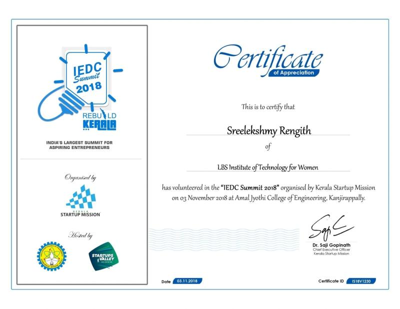

Executive Committee Member, IEDC LBSITW
Jul 2018 - Jul 2019 | Trivandrum, Kerala, India
- Played an integral role in fostering a culture of innovation and entrepreneurship among students.
- Collaborated with a dedicated team to organize workshops, seminars, and events that provided students with resources, networking opportunities, and mentorship.
- Coordinated events like hackathons, idea pitching sessions, and expert talks to help aspiring entrepreneurs gain confidence and skills.
- Developed leadership, project management, and communication skills, contributing to a vibrant entrepreneurial community on campus.
Volunteer, IEDC Summit 2018
Dec 2018 | Trivandrum, Kerala, India
- Volunteered at the 2018 IEDC Summit, the largest student entrepreneurship summit in Kerala.
- Assisted in event management, including registration, coordination of sessions, and guiding attendees.
- Engaged with industry experts, entrepreneurs, and students, enhancing networking and organizational skills.
- Supported student entrepreneurship initiatives by deepening understanding of the startup ecosystem.
- 
×

Volunteer, Bitcamp 2024
Apr 2024 | College Park, MD, USA
- Participated as a volunteer at Bitcamp 2024, one of the largest hackathons on the East Coast.
- Collaborated with teams from diverse backgrounds, fostering an inclusive environment for creativity and innovation.
- Developed communication and mentoring skills while contributing to a dynamic and fast-paced event.